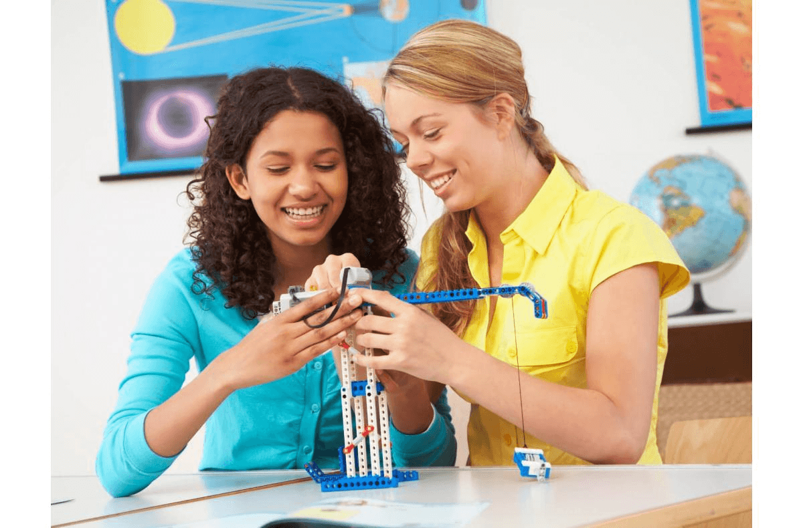
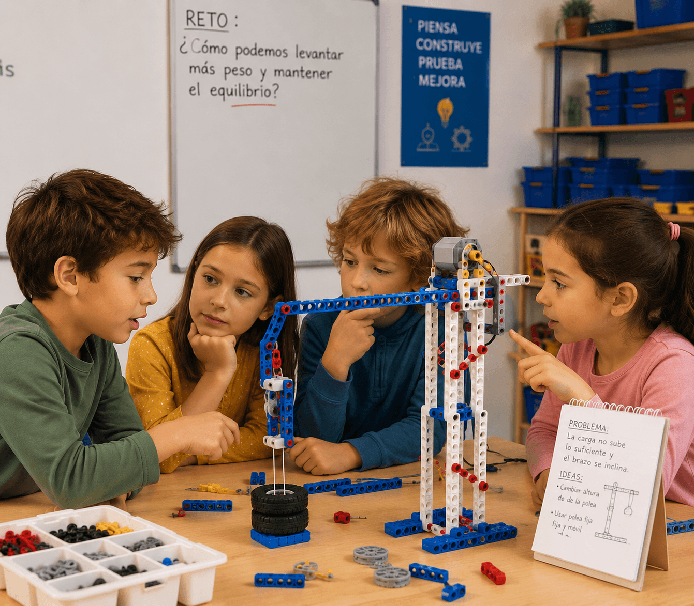
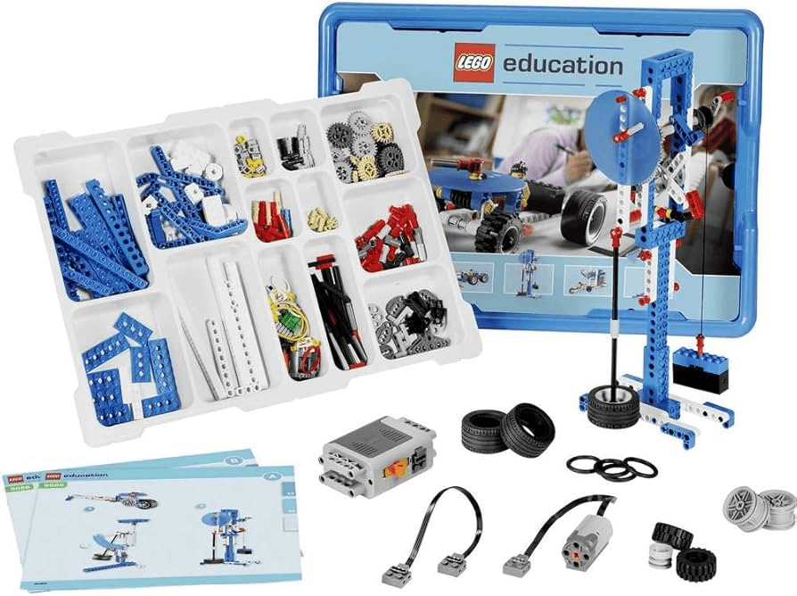
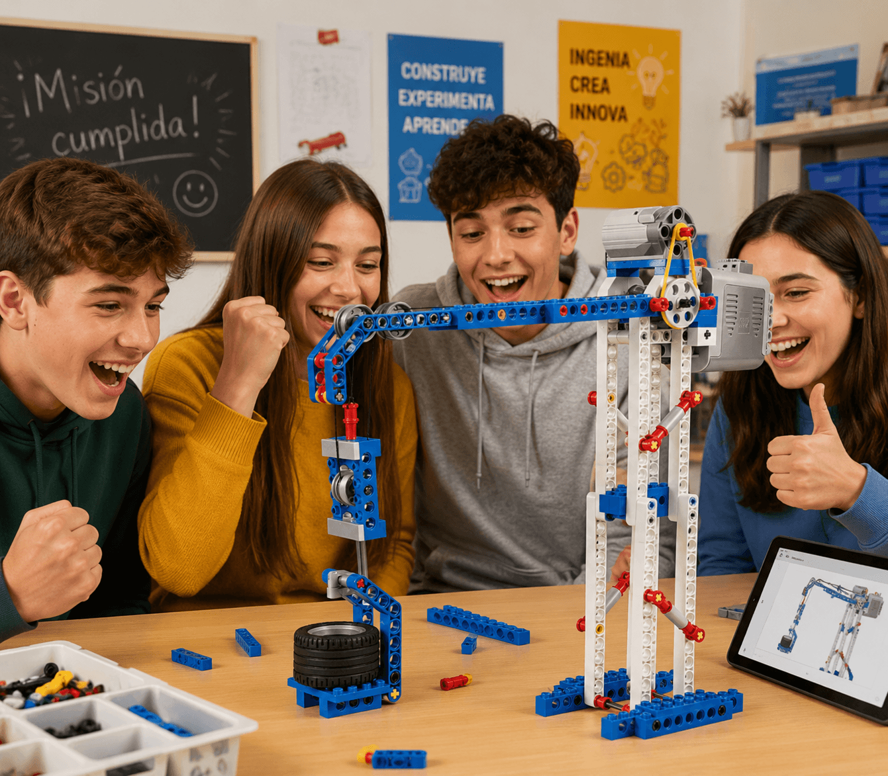

El set Máquinas Sencillas y Motorizadas es una herramienta práctica y atractiva que utiliza piezas reales
LEGO® para ayudar a los alumnos de primaria a descubrir cómo funcionan los engranajes, las palancas, las
poleas, las ruedas y los ejes, al mismo tiempo que adquieren conocimientos básicos sobre ciencias e ingeniería.
El material ha sido diseñado para ser utilizado por niñ@s a partir de 8 años.
Cada una de las lecciones siguen la experimentada metodología de LEGO® Education, el planteamiento 4C:
Conectar, Construir, Contemplar y Continuar. Dicha metodología le permitirá avanzar naturalmente por las
actividades.

Este kit, permite a los niños trabajar como jóvenes científicos, ingenieros y diseñadores, ofreciéndoles
situaciones, herramientas y tareas que fomentan el desarrollo de la tecnología, la ciencia y las
matemáticas.
Los alumnos se sienten animados a implicarse en investigaciones y problemas razonados reales; realizan
asunciones y predicciones; diseñan y crean modelos, observando después su comportamiento; reflejan y
rediseñan, presentando posteriormente sus hallazgos.
Este kit, permite a los profesores cubrir las siguientes habilidades curriculares generales:
• Pensar con creatividad para intentar explicar la forma en que funcionan las cosas.
• Establecer enlaces entre la causa y el efecto.
• Diseñar y fabricar artefactos que cumplan criterios específicos.
• Probar ideas utilizando el resultado de sus observaciones y medidas.
• Realizar preguntas que puedan ser investigadas científicamente.
• Reflexionar acerca de cómo encontrar respuestas e imaginar nuevas posibilidades.
• Pensar en lo que podría ocurrir y probar ideas nuevas.
• Realizar comparaciones cambiando factores y observando o midiendo los efectos.
• Realizar observaciones y medidas sistemáticas.
• Decidir si los resultados coinciden con las predicciones realizadas, y si las conclusiones permiten
realizar más predicciones.
• Revisar el trabajo y describir su importancia y limitaciones.

El set de construcción 9686 dispone de 396 elementos, incluyendo un motor,

Las lecciones siguen el planteamiento 4C de LEGO Education; Conectar, Construir, Contemplar y Continuar. Esto les permitirá progresar naturalmente por medio de las actividades.
Se agrega conocimientos al cerebro al conectar una nueva experiencia a la que ya posee, o cuando una experiencia de aprendizaje inicial actúa como semilla que estimula el crecimiento de su conocimiento. Se ofrecen ideas para ayudar al alumno a identificar un problema.
Se aprende mejor si se implican las manos y las mentes. Los alumnos aprenden a construir modelos paso a paso.
Cuando se contempla lo que se ha hecho, se tiene la oportunidad de profundizar en su entendimiento. Al
reflejarse, se desarrollan conexiones entre sus anteriores conocimientos y sus nuevas experiencias.
Ello implica que el alumno reflexionará acerca de lo que ha observado o construido, y profundizará en su
comprensión de lo que ha experimentado.
Esta fase incluye también la posibilidad de comenzar a evaluar el aprendizaje y el progreso de cada alumno.
Siempre se disfruta más y se es más creativo aprendiendo si las cosas se hacen desafiantes. Mantener este
desafío y el placer del deber cumplido inspira naturalmente la continuación de trabajos más avanzados.
Esta fase permite al alumno trabajar a distintas velocidades y niveles, adaptados a su capacidad individual.
Una vez concluida la actividad, se le plantearan al alumno diversos retos para aprovechar al máximo el
aprendizaje adquirido.
Debe alentarse siempre a los niños para que construyan su propia solución a cualquier problema dado.
Si es posible, sacaremos una fotografía de la solución del modelo de los niños y les pediremos que expliquen
cómo han resuelto el problema.
Conservaremos la fotografía como material inspirador para futuros solucionadores del problema.
